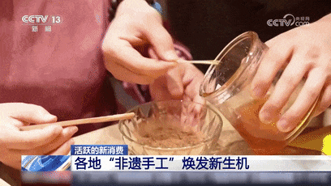
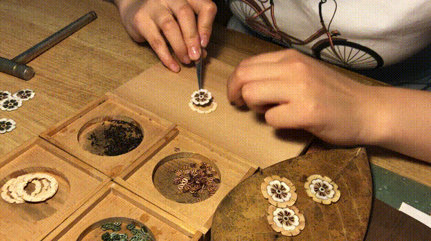
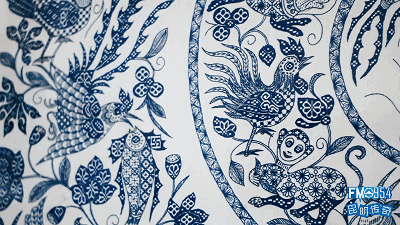
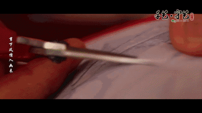

手艺视界

摩梭绘画
“摩梭绘画的表现手法不仅注重原始的点线面的绘画，还重视色彩的搭配，通过红、绿、黄、白、蓝五种色彩的搭配，表现出庄重、喜庆、吉祥等理念。”28日，记者来到四川省泸沽湖景区内一处普通的四合院里，“80后”摩梭画师喇兵玛扎实正手拿着画笔，蘸取矿物质粉做成的特殊颜料，一笔一笔在画布上细细描摹，为即将送往当地雍仲林寺庙的唐卡画《佛祖》做最后“补色”的工序。
了解更多

中国漆器工艺的楚式漆器
代表中国漆器工艺高峰的楚式漆器，目前从业人员仅20余人，且还在不断减少。楚式漆器髹饰技艺国家级代表性传承人邹德香已年过七旬，他这辈子最大的希望就是“别让楚漆技艺在我们这代人手中消失”。
了解更多

台州玻璃雕刻技艺
“1997年香港回归，我父亲雕刻了《九龙庆回归》；1999年澳门回归，我与父亲一起雕刻《荷花醒狮》……我们以砂轮作笔，用玻璃作画，见证祖国发展。”近日，浙江省非物质文化遗产代表性保护项目“台州玻璃雕刻技艺”传承人吴刚接受中新网专访时如是说。
了解更多

“后山剪刀”
说起安徽宣城，人们可能会立刻想起宣纸、宣笔，但可能很多人不知道，被誉为“天下第一剪”的“后山剪刀”也出产于这里，其制作技艺可以追溯到宋朝末年，并在上世纪八十年代达到鼎盛时期，年产量可达二百多万把。如今，虽然曾经驰名中外的“后山剪刀厂”已不复存在，但厂里的老职工们却在自家开设家庭式小作坊，坚守着这门古老的传统制剪工艺。
了解更多手艺视界
-
各地“非遗手工”焕发新生机
-
“漆扇制作出的不仅是一件艺术品”
-
蜀绣与苏绣、湘绣、粤绣齐名，为中国四大名绣之一
-
“摩梭绘画的表现手法不仅注重原始的点线面的绘画...
-
以铁为笔，以木为纸，绘制烙画。其潜心钻研烙画数十载，传承民间技艺
-
剪纸是古老的中国民间艺术竹纸、竹雕、竹编画、瓷胎竹编……
-
楚式漆器髹饰技艺国家级代表性传承人邹德香已年过七旬...
-
以砂轮作笔，用玻璃作画一起雕刻《荷花醒狮》……
-
宣纸、宣笔但被誉为“天下第一剪”的“后山剪刀”也出产于这里